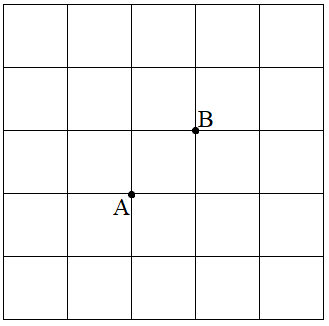
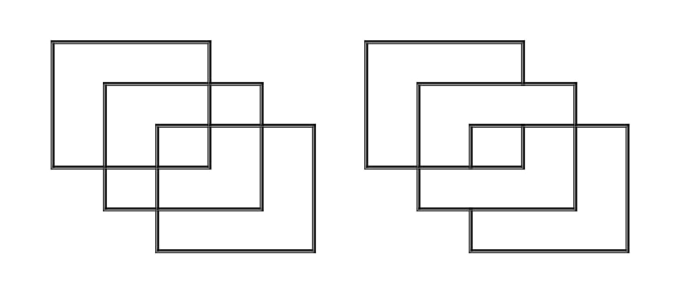
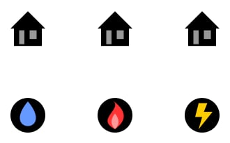
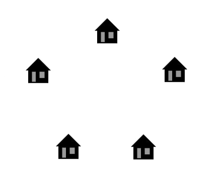

Степінь $\delta(v)$ вершини $v$ - кількість ребр, що виходять з неї.
При $\delta(v)=0$ -
ізольована, при $\delta(v)=1$ - кінцева (висяча).
У будь-якому графі $G = (V, E)$ виконується рівність $\sum\limits_{v\in V}^{}\delta(v)=2|n_{e}|$,
($n_{e}$ - число ребр).
Граф називають зв'язним, якщо будь-яку пару його вершин можна з'єднати деяким маршрутом.
Грань графа - такий регіон площини, кожні дві точки якого можна з'єднати кривою, що не має
перетинається з ребрами чи вершинами графа.
Теорема 1. (Формула Ейлера) Нехай $G$ - зв'язний плоский граф, в якому $n_{v}$, $n_{e}$ і $n_{f}$ відповідно число
вершин, ребер і граней. Тоді має рівність $n_{v}+n_{f}=n_{e}+2$.
Теорема 2. (Теорема Ейлера) Зв'язний граф $G$ є ейлеровим (існує маршрут, що проходить через кожне ребро рівно один раз)
тоді й тільки тоді, коли степені всіх його вершин парні.
Задача 1. У Вестеросі кожен замок з'єднаний з кожним іншим замком дорогою. Новий
король хоче ввести на всіх дорогах односторонній рух так, щоб виїхавши з замку, в цей же
замок ніколи не можна було б вернутися. Чи завжди так можна зробити?
Задача 2. Доведіть, що число областей України, що мають непарне число сусідів, парне.
Задача 3. Дано повний (кожні дві вершини мають спільне ребро) граф з 17 вершин.
Кожне ребро цього графу зафарбовано в один з троьх кольорів. Доведіть, що існують три вершини,
що формують трикутник одного кольору.
Задача 4. Турист хоче прогулятися по центру міста з точки $A$ в точку $B$ по якомога
довшому маршруту, але при цьому не опиняючись на одному перехресті більше одного разу.
Знайдіть найдовший можливий маршрут, і доведіть, що довшого бути не може.

Задача 5. Чи можна намалювати кожну із цих двох картинок, не відриваючи олівець від
паперу, і проходячи по кожній лінії лише один раз?

Задача 6. Чи можна скласти решітку $4\times 4$ із: а) 5 ламаних довжиною $8$.
б) 8 ламаних довжиною $5$.
Задача 7. В компанії у кожних двох людей є рівно $5$ спільних знайомих. Доведіть,
що кількість пар знайомих ділиться на $3$.
Задача 8. У далекому королівстві міста з'єднані дорогами, що не перетинаються за межами міст.
В кожному місті встановлена табличка, на якій вказана мінімальна довжина маршруту, що виходить з
цього міста і проходить через всі інші міста (він може проходити через одне місто більше одного
разу і не має вертатися в вихідне місто). Доведіть, що в довільних двох містах ці числа не
відрізняються більше ніж в півтора рази.
Задача 9. В країні є 64 міста, які можуть, або можуть не бути з'єднані між собою
дорогами. Ми можемо вибрати довільні два міста і запитати - чи з'єднані вони, чи ні.
Потрібно визначити, чи можна в цьому місті добратися з довільного міста в довільне інше.
Чи існує алгоритм, за яким можна взнати це за менш ніж 2016 питань.
Задача 10. Чи можна з'єднати кожен із трьох будинків із кожним із трьох ресурсів
(електрика, водопостачання та отеплення) так, щоб жодна з ліній не перетиналась? (див. рис.)

Задача 11. Чи можна з'єднати кожен із п'яти будинків один із одним стежками так,
щоб ці стежки не перетиналися? (див. рис.)

Задача 12. Задача про Кенігсберзькі мости: знайти такий маршрут через місто,
щоб пройти всі сім мостів і кожним мостом пройти рівно один раз?
Залиште коментарій
Коментарії